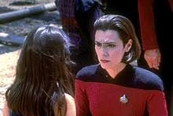
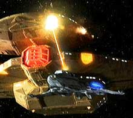
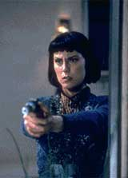

|
fcil ser santo no paraso... (Parte I)
A completa histria
dos Maquis
 A
histria da humanidade est repleta de exemplos de povos que
tiveram que ser relocados por decises polticas, por estarem no
"caminho do progresso e do desenvolvimento" ou no
"caminho da paz", de "superpotncias" naquele
dado perodo de tempo. A
histria da humanidade est repleta de exemplos de povos que
tiveram que ser relocados por decises polticas, por estarem no
"caminho do progresso e do desenvolvimento" ou no
"caminho da paz", de "superpotncias" naquele
dado perodo de tempo.
Tal tema j at havia sido foco de episdios de Jornada no
passado (passado sendo considerado episdios feitos antes de
1994, antes da stima temporada da A Nova Gerao e da
segunda temporada de Deep Space Nine.
Ento por que os episdios envolvendo os Maquis oferecem uma
diferente perspectiva em relao ao que havia sido feito
anteriormente? Este artigo tem por objetivo responder a esta
pergunta.
Ao contrrio do que muitos pensam, os Maquis foram concebidos
para preencher a proposta bsica da srie Voyager: "Uma
nave da Frota Estelar perdida do outro lado da galxia e duas
tripulaes (uma da Frota Estelar e uma 'XXXXX') devem resolver suas diferenas
para sobreviver frente ao desconhecido e obter um caminho para
casa", onde o nome 'Maquis' entra no lugar do 'XXXXX'.
 Desta
forma, a histria pregressa dos Maquis foi estabelecida em episdios
de A Nova Gerao e DS9, especialmente
"Journey's End" e
"Preemptive Strike", da stima temporada
de A Nova Gerao, e o
duplo "The Maquis", da segunda temporada de
DS9. No ltimo,
pode-se observar os crditos de histria para os criadores de Voyager: Rick Berman, Michael Piller e Jeri Taylor.
Por mais irnico que possa parecer, os Maquis no tiveram seu
melhor tratamento em Voyager (o mais correto seria colocar que em
Voyager eles tiveram o seu pior tratamento).
O conflito inicial entre as tripulaes "Frota versus
Maquis" foi resolvido de forma muito rpida sem o
"payoff" dramtico que uma situao como esta
necessita para ser considerada como realista.
Os personagens ex-Maquis tiveram suas motivaes para se juntar
ao grupo e mesmo as conseqncias de tal adeso essencialmente
suprimidas de suas personalidades, e quando tais caractersticas
vinham tona apareciam em situaes aparentemente foradas e
sem conseqncia.
Talvez os temas advindos de uma questo poltica to importante
necessitem de uma dedicao, esforo e compromisso reforados
- algo que aparentemente faltou aos roteiristas de Voyager (no s
no aspecto Maquis) durante toda a produo da srie.
Mas uma coisa deve ser dita em favor dos roteiristas de Voyager:
os Maquis foram apenas uma forma de unificar sobre um nico tema
(ou rotular em uma famlia de histrias), uma complexa e dinmica
situao poltica que envolveu a maioria das grande potncias
de todo o quadrante Alfa, uma situao poltica que Voyager
(por construo dramtica da srie) obviamente no poderia
tratar.
Os Maquis nasceram como um grupo organizado
de cidados da Federao quando do incio de hostilidades
entre colonos da Federao e colonos Cardassianos na interior da
Zona Desmilitarizada.
Pelos termos do tratado assinado entre a Federao e Cardssia,
a fronteira entre as duas potncias foi redesenhada e colnias
de um governo passaram a ser administradas pelo outro e vice-versa. Uma
situao extremamente voltil, se levarmos em considerao
que h menos de cinco anos estes dois governos estavam em estado
de guerra.
O tratado citado pela primeira vez no episdio da stima
temporada de A Nova Gerao "Journey's End". Neste episdio, a
Almirante Nechayev (o "oficial superior recorrente de
Picard" nas ltimas temporadas da srie, especialmente em
assuntos envolvendo Cardssia e, por conseguinte, a DMZ) comunica
a Picard sobre o novo desenho das fronteiras e lhe d a difcil
tarefa de mover uma colnia da Federao, agora localizada em
espao Cardassiano.
Tal colnia (de Dorvan V) formada por descendentes de uma
antiga tribo da Amrica terrestre que deixou a terra para
encontrar um novo lar sculos atrs. Ao final do episdio os
colonos decidem permanecer (por suas profundas crenas no seu
relacionamento com sua terra) no planeta, agora sob administrao
Cardassiana.
"Journey's End" um episdio horroroso (assim como
metade da stima temporada de A Nova Gerao) que tem como nico ponto
positivo introduzir o tratado e oferecer alguma experincia em
primeira mo sobre as conseqncias de sua assinatura.
A trama principal do episdio parece duvidar da capacidade do
telespectador de fazer o bvio paralelo histrico entre esta
situao (de relocao) e outras que aconteceram no passado.
Por isso, ela faz questo de fazer dos colonos uma tribo de
nativos americanos (pelo amor de Deus!!!), com direito a uma
bizarra concepo de que Picard guarda um dbito com os
nativo-americanos por atrocidades cometidas por um ancestral dele.
Na trama secundria, Wes em crise existencial (por aparentemente
razo alguma, pois o incidente na Academia do episdio
"First Duty", da quinta temporada de A
Nova Gerao, parece ter sido
totalmente esquecido) reencontra o "Viajante" (dos episdios
"Where No One Has Gone Before", da primeira temporada de
A Nova Gerao, e "Remember Me", da quarta temporada da
A Nova Gerao) que
lhe d uma "difcil" escolha de ficar e lidar com seus
problemas ou dar um bico em tudo e viajar com ele para explorar a
essncia do universo. Eu preciso realmente dizer o que ele
escolheu?
 (Um
outro detalhe que o personagem Chakotay, de Voyager, tem um
passado similar ao dos colonos deste planeta, sendo que ele
abandonou a Frota Estelar para lutar ao lado dos Maquis em
circunstncias anlogas.)
Os Maquis foram retratados novamente em A Nova
Gerao no excelente episdio
da stima temporada "Preemptive Strike". Neste episdio,
Ro Laren (de volta Enterprise com posto de tenente, aps
terminar com honras um curso especial de tticas avanadas)
recrutada pelo comando da Frota para uma misso de infiltrao
em uma clula Maquis.
Conseguindo um lugar dentro do grupo, Ro comea a suprir falsas
informaes para os Maquis, preparando-os para uma armadilha.
Entretanto comea a crescer a simpatia dela pela causa dos Maquis
e ela fica (cada vez mais) dividida entre seu dever como oficial
da Frota (ela d especialmente importncia opinio de Picard
sobre ela, provavelmente Picard teve que "mexer alguns
pauzinhos" para conseguir a admisso dela neste
(supostamente extremamente concorrido) curso, estabelecendo
possivelmente uma relao mentor-pupila) e a lealdade a estas
pessoas que ela mal conheceu, mas com as quais partilha uma vida
de similaridades.
Ao final do episdio, ela decide que no pode levar os Maquis
para a armadilha, sabota o plano da Frota na ltima hora e se
junta aos Maquis. Ao receber a notcia pelas mos de Riker,
Picard fica sozinho em seu escritrio completamente devastado.
Ro Laren, apesar de ter aparecido to pouco durante a srie,
sempre foi uma das minhas personagens favoritas (de fato, Ro foi
introduzida no episdio "Ensign Ro", da quinta
temporada de A Nova Gerao com a perspectiva de assumir o posto de
primeiro-oficial de Deep Space Nine, porm a atriz Michele Forbes
acabou brigando com a produo e a idia no foi a frente).
O episdio funciona por causa de Ro Laren (cada atitude e linha
de dilogo soa verdadeira) e sua deciso final fecha de forma
ainda mais verdadeira o episdio. A cena final no escritrio de
Picard extremamente forte.
Voc realmente sente a traio da personagem. claro, sentiramos
mais se o personagem estivesse mais presente durante a srie, mas
sentimos infinitamente mais do que se um outro novo personagem
fosse introduzido somente para os propsitos do episdio (a l
Valeris em "Jornada nas Estrelas VI - A Terra Desconhecida").
Apenas elementos de trama (que infelizmente enfraquecem a
severidade da situao retratada) tiram o completo estrelato
desta jia: a facilidade da infiltrao de Ro e dois encontros
posteriores de Ro com Picard. Um a bordo da Enterprise e um outro
em que Picard vai ao seu encontro na colnia Maquis!!!
(Aparentemente, a Frota Estelar no desistiu de tentar infiltrar
algum entre os Maquis, como atesta o piloto de Voyager,
"Caretaker", com Tuvok j infiltrado na clula de
Chakotay.)
 Os
Maquis foram introduzidos um pouco antes de "Preemptive
Strike", no excelente episdio duplo da segunda temporada de
DS9 "The Maquis".
A temtica Maquis tem de fato o seu lar em DS9, por ser um
assunto em que abundam: slidos pontos de vista de todos os
envolvidos; situaes extremamente tensas com real conflito, a
falta de respostas fceis e escolhas que sempre vo chamuscar ao
menos uma das partes envolvidas no final; viles (antagonistas)
realmente tridimensionais, com os quais ns podemos de fato
simpatizar e nos importar; e uma infinidade de tons de cinza.
Continua...
Luiz
Castanheira editor do Trek
Brasilis
|